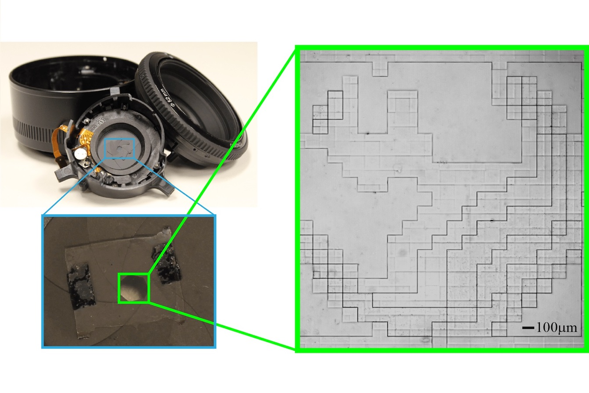
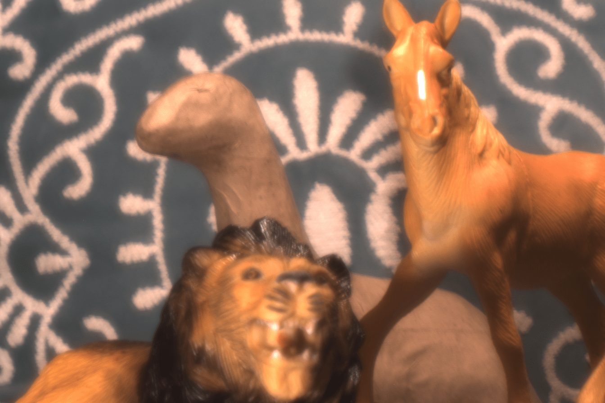

|  |  |
Left: PhaseCam3D prototype. A learned phase mask is fabricated and attached on the aperture of a DSLR lens. Right: A captured coded image using PhaseCam3D and (hover over the image) the estimated disparity from the digital network.
There is an increasing need for passive 3D scanning in many applications that have stringent energy constraints. In this paper, we present an approach for single frame, single viewpoint, passive 3D imaging using a phase mask at the aperture plane of a camera. Our approach relies on an end-to-end optimization framework to jointly learn the optimal phase mask and the reconstruction algorithm that allows an accurate estimation of range image from captured data. Using our optimization framework, we design a new phase mask that performs significantly better than existing approaches. We build a prototype by inserting a phase mask fabricated using photolithography into the aperture plane of a conventional camera and show compelling performance in 3D imaging.
@inproceedings{wu2019phasecam3d,
title={Phasecam3d—learning phase masks for passive single view depth estimation},
author={Wu, Yicheng and Boominathan, Vivek and Chen, Huaijin and Sankaranarayanan, Aswin and Veeraraghavan, Ashok},
booktitle={2019 IEEE International Conference on Computational Photography (ICCP)},
pages={1--12},
year={2019},
organization={IEEE}
}{kind=link}